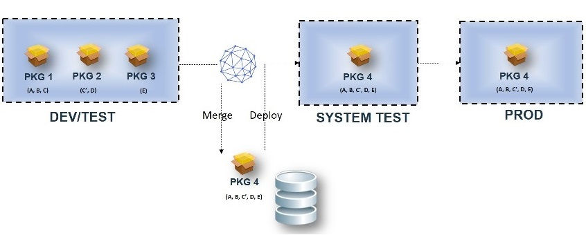

Merging z/OS component versions
Two or more z/OS component versions can be merged from a snapshot into one component version to simplify the deployment to the next environment. Merging component versions in this way avoids deploying intermediate programs into production.
Before you begin
- Only incremental versions of z/OS components can be merged.
- Only versions stored in the CodeStation can be merged. The merged version is also stored in the CodeStation.
- Merging of versions is not supported when any of the z/OS versions have HFS artifact (shiplist type as directory and file).
- Only data sets are merged into the new version.
- When two or more versions contain the same artifact, the artifact from the latest version in the snapshot is used.
- All customer properties on containers are added to the container in the merged version. This might lead to deployment failures if the deployment process relies on properties on containers.
- The merged version has version properties from the last version in the snapshot.

Procedure
Results
- Deployment, backup, and restore actions of merged versions proceed like any other version. No change is required in the deployment process.
- Deleting or archiving the original version has no impact on the merged version.
- A merged version can be merged with other versions again.
- Properties that you set on a Partitioned Data Set (PDS) are added from all versions to the PDS
in the merged version for the same properties. The later value for the property overwrites the
former value.Note: Overwriting PDS properties might lead to deployment failures if your deployment process relies on the properties that you set in the PDS.